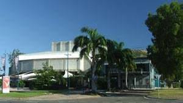

Townsville Music Centre
Townsville Music CentreAre you new to Townsville?
Why not come and check out the Townsville music centre!
There is a lot of music activity that happens through out the year. The Music Centre holds concerts and they have a range of different genres for everyone. They also feature touring artists and locally-based professional and emerging artists.
On Sunday’s local musicians perform at the civic centre and the remaining sheet music, books and CD’s are put on display and distributed free of charge to the local music community.
There are events happening each month such as Dream Serenade with the Harbourside Duo. For more information on what’s happening through out the year check out the events page.
Busking is permitted at several public spaces around the city with a Buskers Permit from the city council - phone 4727 9680. There is no age limit, but buskers 16 and under will need to be accompanied by a parent/guardian.